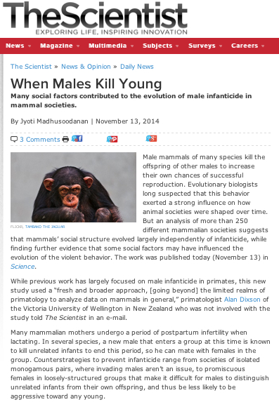
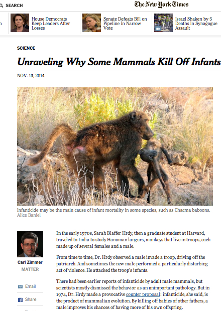
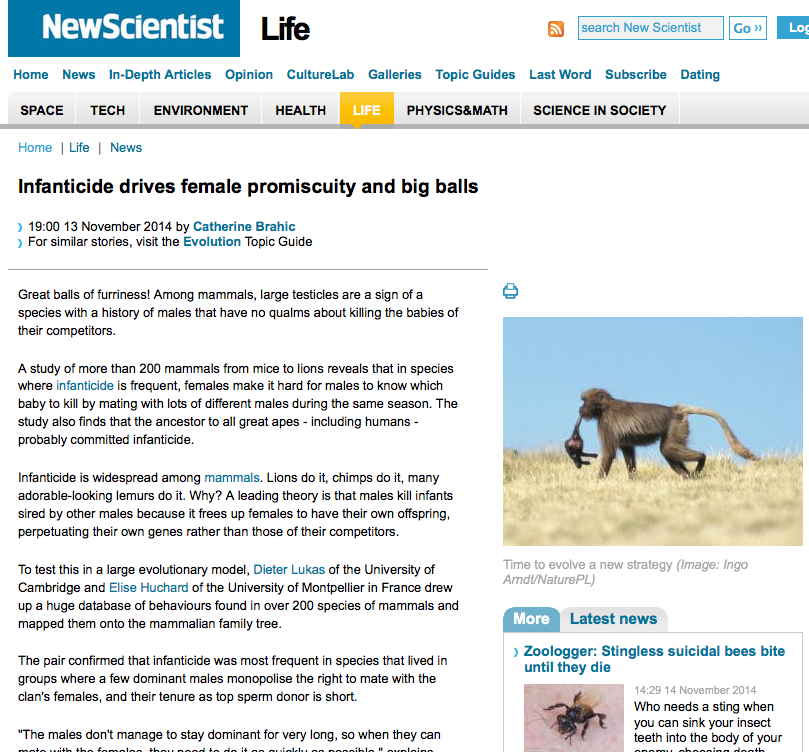
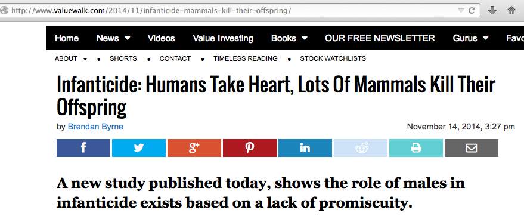
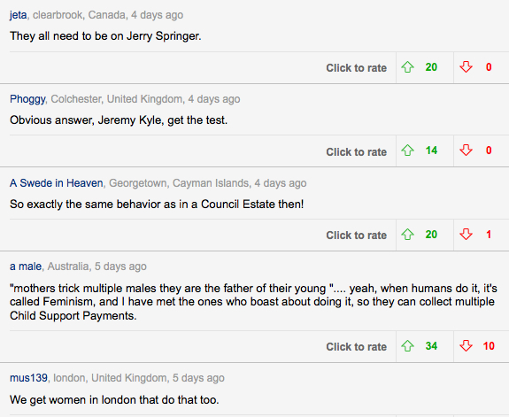
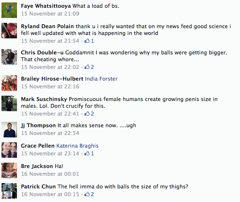

|
4) What made it into the news and how can I influence that?
Going through all the news articles, reports, and comments
across the web made me think of that Western movie The Good, The Bad, and
The Ugly.
The Good
They got quotes from us and others and added value to our findings:
  
The Bad
They never contacted us and just wrote something that is incorrect/strange:

The Ugly
Not the actual news reports, but some of the comments that appear around them:
 
What to do about the different reports?
Most reports were good. I think the mostly widely read stories are
those by journalists that make an effort to ensure that their story is
correct. Many other outlets publish the press release in full or quote
from the release (or, in a form of reporting I had not encountered
before, build a story by copying paragraphs from other news outlets).
I will only know about the bad reports after they have been published so there is not much I can do about them.
Though, all of these reports rely on information I originally release -
the paper, the press release, email replies, or phone interviews.
So I should start early to prepare all of the material that I can control.
|
Main message
Focus most my time and effort before the outreach, not during or after.
Continue to part 5 to find out how I will adjust my preparation for future publications.
|
|